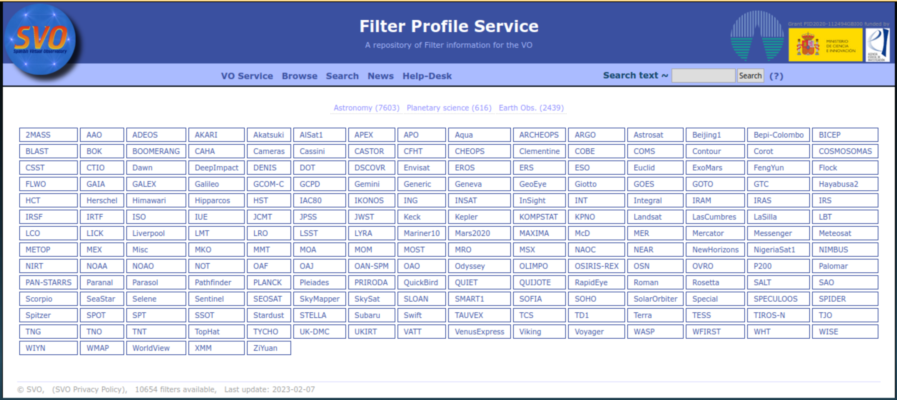
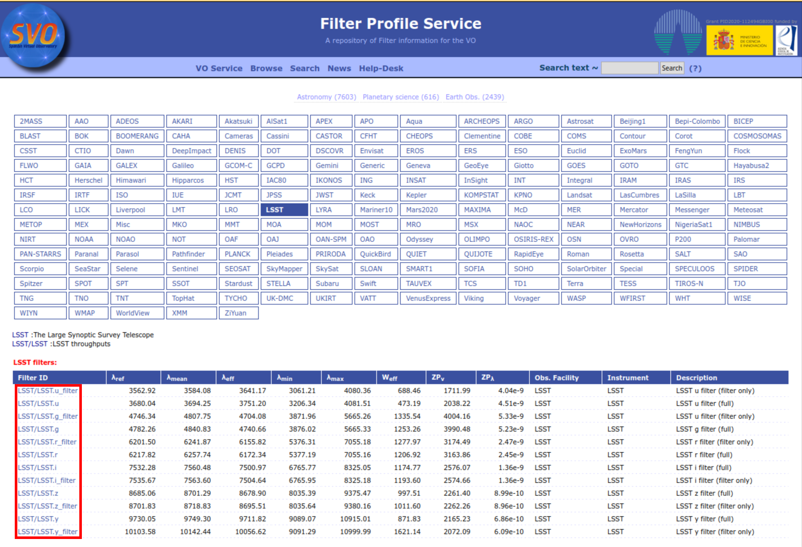
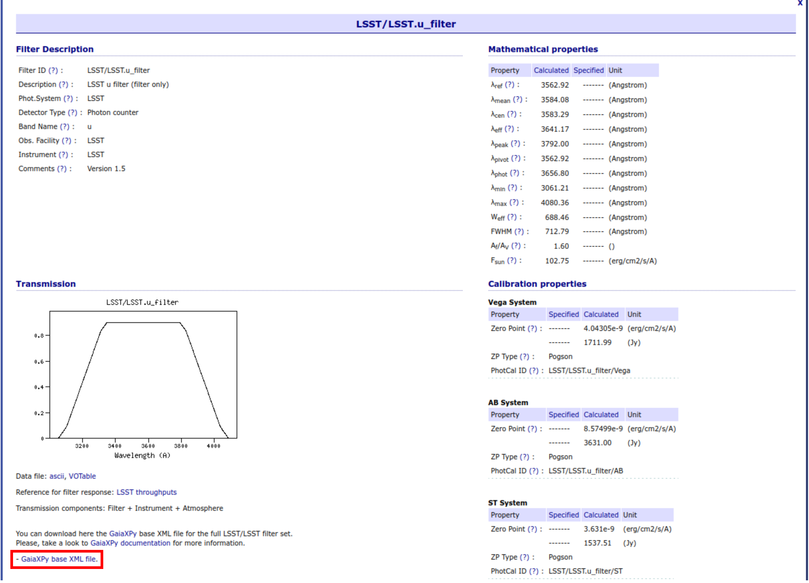

Introduction
SVO has made available a set of additional filter files that can be used in GaiaXPy to generate synthetic photometry. Users wishing to generate synthetic photometry from these files will need to download the bases from their website, and then load them into GaiaXPy. Only one file needs to be downloaded for each system. This file will contain information for all of the bands.
The main webpage from where users can download these files can be found at the following link: SVO Filter Profile Service.
A tutorial on how to load these filters can be found here.
There are two basic ways in which the files can be downloaded: 1) directly from the webpage in a browser and 2) programmatically through the wget command.
Option 1: Browser
Access the SVO Filter Profile Service. The page at the date this tutorial has been written (2023/02/10) looks the following:
.The page allows users to select any of the filters, although GaiaXPy files are not available for all of them.
For example, if LSST is selected, the following page will open, click on any of the links indicated by the red rectangle.
A page containing the description of the filter will open, if a GaiaXPy file is available, this will be shown the near the bottom of the page.
Click on the link indicated by the red rectangle to download the file.
Option 2: wget command
If the link to a file is known, the file can be retrieved with the wget command.
If http://svo2/getgaiaxpy.php\?gxpyid\=Filter/Filter is the link to a filter, wget can be used in the following way:
wget --content-disposition -P outputdir/ http://svo2/getgaiaxpy.php\?gxpyid\=Filter/Filter.
The --content-disposition option is required to preserve the original file name which contains important information.
Important notes
- Information about the filter is encoded in the file name, you should not modify the original name.
- As previously indicated, only one file needs to be downloaded for each filter, this file contains information for every band in the system.